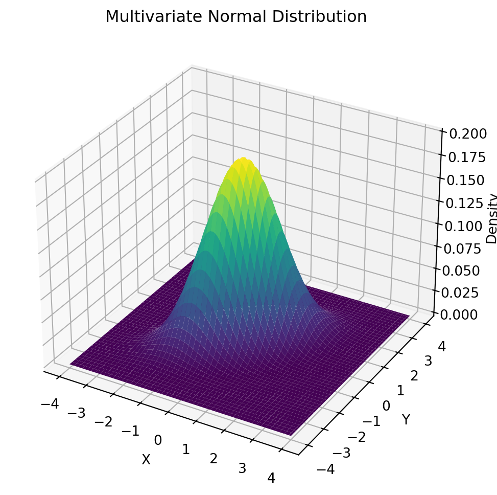
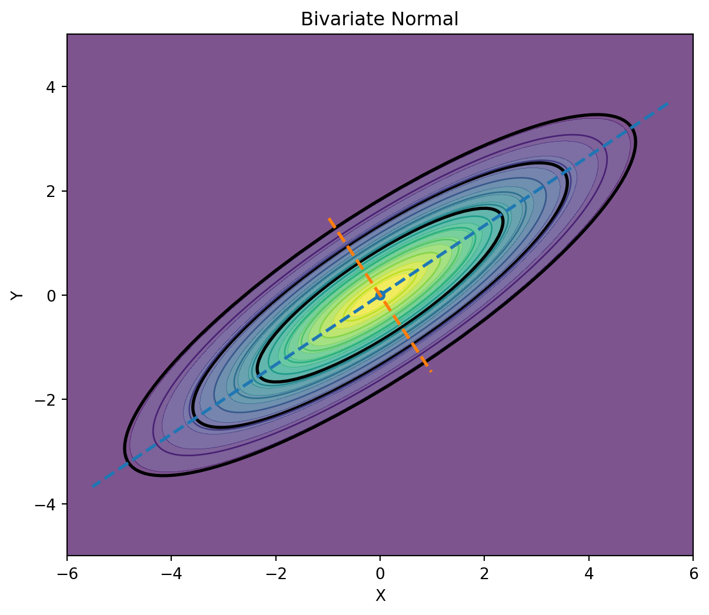
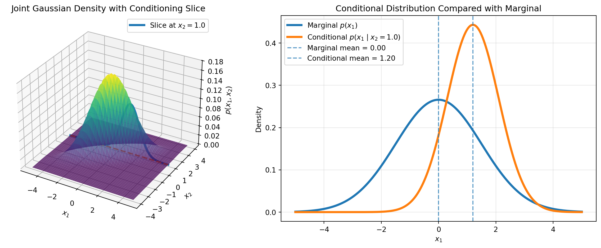
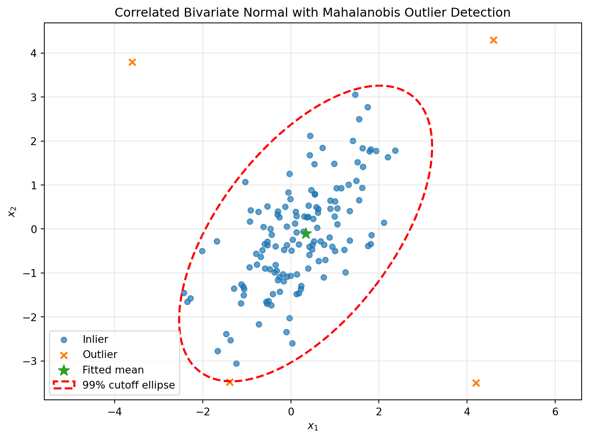

Working notes on the geometry, covariance structure, and useful identities of the multivariate normal distribution.
Published
July 1, 2026
The multivariate normal shows up everywhere — sensor fusion, finance, Gaussian processes, anomaly detection — not because nature is Gaussian (!?), but because it is the distribution we get almost for free once we accept a few modeling shortcuts, and it happens to be the one multivariate distribution we can compute with in closed form. At the moment, I am writing another post about Bayesian inference, and I think we really need an understanding of one of (or, not gonna lie, the true) most popular distributions that will later be discussed everywhere in the context of probability (or Bayesian) concepts. This post builds it up from scratch, derives the properties that make it useful, and then walk we through how to actually use it on a real problem.
Code
import numpy as npimport matplotlib.pyplot as pltfrom scipy.stats import multivariate_normal# Mean vectormean = [0, 0]# Covariance matrixcov = [ [1, 0.6], [0.6, 1]]# Create x-y gridx = np.linspace(-4, 4, 100)y = np.linspace(-4, 4, 100)X, Y = np.meshgrid(x, y)# Combine X and Y into coordinate pairspos = np.dstack((X, Y))# Multivariate normal densityrv = multivariate_normal(mean, cov)Z = rv.pdf(pos)# 3D plotfig = plt.figure(figsize=(8, 6))ax = fig.add_subplot(111, projection="3d")ax.plot_surface(X, Y, Z, cmap="viridis")ax.set_title("Multivariate Normal Distribution")ax.set_xlabel("X")ax.set_ylabel("Y")ax.set_zlabel("Density")plt.show()

Figure 1: Multivariate Normal Distribution
1. What the distribution actually says
Start from the one-dimensional normal we already know: a bell curve controlled by a mean \(\mu\) and a variance \(\sigma^2\). The multivariate normal is the natural generalization to a random vector\(\mathbf{x}=(x_1, \dots, x_k)\) instead of a single number. Instead of a mean and a variance, it’s controlled by a mean vector and a covariance matrix; and instead of a symmetric bump on a line, its density is a symmetric bump over a \(k\)-dimensional space, whose cross-sections are ellipses rather than points.
NoteDefinition
A random vector \(\mathbf{x}\in \mathbb R^{k}\) has a (non-degenerate) multivariate normal distribution with a mean vector \(\boldsymbol\mu\) and covariance matrix \(\Sigma\) (symmetric, positive definite) if its density is
written \(\mathbf x \sim \mathcal N(\boldsymbol\mu, \Sigma)\). When \(\boldsymbol\mu=\mathbf{0}\) and \(\Sigma=I\) (the identity), this is the standard multivariate normal — just \(k\) independent standard normals stacked into a vector.
Two structural facts are worth noticing immediately, because everything later depends on them. First, the exponent is a quadratic form, \((\mathbf{x}-\boldsymbol\mu)^\top \Sigma^{-1}(\mathbf{x}-\boldsymbol\mu)\) , and quadratic forms with a positive-definite matrix have ellipsoidal level sets. So every “slice” of constant density is an ellipse (in 2D) or ellipsoid (in higher dimensions), centered at \(\boldsymbol \mu\), whose shape and orientation come entirely from \(\Sigma\). Second, \(\Sigma\) is doing two jobs at once: its diagonal entries are the ordinary per-coordinate variances, and its off-diagonal entries are the covariances that tell us how the coordinates move together1.
Code
import numpy as npimport matplotlib.pyplot as pltfrom scipy.stats import multivariate_normal, chi2from matplotlib.patches import Ellipsemu = np.array([0, 0])Sigma = np.array([ [4.0, 2.4], [2.4, 2.0]])x = np.linspace(-6, 6, 300)y = np.linspace(-5, 5, 300)X, Y = np.meshgrid(x, y)pos = np.dstack((X, Y))Z = multivariate_normal(mu, Sigma).pdf(pos)eigvals, eigvecs = np.linalg.eigh(Sigma)order = eigvals.argsort()[::-1]eigvals = eigvals[order]eigvecs = eigvecs[:, order]angle = np.degrees(np.arctan2(eigvecs[1, 0], eigvecs[0, 0]))fig, ax = plt.subplots(figsize=(8, 6))ax.contourf(X, Y, Z, levels=20, alpha=0.7)ax.contour(X, Y, Z, levels=10, linewidths=1)for c in [0.50, 0.80, 0.95]: s = chi2.ppf(c, df=2) a = np.sqrt(s * eigvals[0]) b = np.sqrt(s * eigvals[1]) e = Ellipse(mu, 2*a, 2*b, angle=angle, fill=False, lw=2) ax.add_patch(e)# principal axesfor i inrange(2): v = eigvecs[:, i] length =2.8* np.sqrt(eigvals[i]) ax.plot( [mu[0] - length*v[0], mu[0] + length*v[0]], [mu[1] - length*v[1], mu[1] + length*v[1]],'--', lw=2 )ax.scatter(*mu, s=30)ax.set_title("Bivariate Normal")ax.set_xlabel("X")ax.set_ylabel("Y")ax.set_aspect("equal")plt.show()

Figure 2: A bivariate normal with positive correlation. The density’s level sets are ellipses; their axes point along the eigenvectors of the covariance matrix, and their radii along each axis scale with the square root of the corresponding eigenvalue. This is exactly why correlated data looks like a tilted cloud rather than a circular one.
That geometric picture demonstrates two things: \(\boldsymbol \mu\) tells us where the cloud is centered, and \(\Sigma\) tells us its shape (how stretched it is, and in which direction). Everything else later in this post you will see is really about exploiting that geometry.
2. Where the formula comes from
It’s tempting to treat the density formula above as something to memorize. It’s more useful — and much easier to remember — to see it built from a single idea: a multivariate normal is just a linear transformation of independent standard normals.2
Step 1 — build a vector
Let \(\mathbf{z} = (z_1, \dots, z_k)\) be \(k\) independent standard normal variables, so \(\mathbf{z} \sim \mathcal N(0,I)\), Pick any mean vector \(\boldsymbol \mu\) and any invertible matrix \(A\), and define
\[
\mathbf{x} = \boldsymbol \mu + A\mathbf{z}
\]
This \(\mathbf{x}\) is, by construction a linear combination of independent normals, shifted by a constant — and a fact about the normal family is that any linear combination of independent normal variables is itself normal! We come up with a friendly property:
Tip
A vector is multivariate normal precisely when every linear combination of its entries is a (univariate) normal random variable.
Constructing \(\mathbf{x}\) this way just gives us a concrete object satisfying that property.
Step 2 — mean and covariance
Because expectation is linear, \(\mathbb E[\mathbf{x}]=\boldsymbol \mu + A\mathbb E[\mathbf{z}]=\boldsymbol \mu\). For the covariance, using \(\text{Cov}(\mathbf{z})=I\):
So the covariance matrix of \(\mathbf{x}\) is entirely determined by \(A\). Conversely, any symmetric positive-definite \(\Sigma\) can be factored this way — for instance via a Cholesky decomposition — which is why every valid \((\boldsymbol \mu, \Sigma)\) pair corresponds to some such construction3.
Step 3 — change variables to get the density
The density of \(\mathbf z\) is the product of \(k\) standard normal density
Substituting \(\mathbf{z} = A^{-1}(\mathbf{x}-\boldsymbol\mu)\) into the exponent and using \({A^{-1}}^\top A^{-1} = (AA^\top)^{-1}=\Sigma^{-1}\), and \(|\det(A^{-1})|=|\Sigma|^{-1/2}\), everything collapses back into the formula from Part 1:
This derivation is exactly how us sample from a multivariate normal on a computer: draw independent standard normals, then apply a Cholesky factor of \(\Sigma\) and shift by \(\boldsymbol \mu\). It is the cleanest way (IMO) to see why the formula has the shape it does instead of treating it as an arbitrary object to plug numbers into.
A second, equivalent route worth knowing exists via the moment generating function: for \(\mathbf t\in \mathbb R^{k}\), \(M_\mathbf{x}(\mathbf{t})=\exp(\mathbf{t}^\top \boldsymbol \mu + \frac{1}{2} \mathbf t^\top \Sigma \mathbf t)\), obtained directly from the univariate MGF of the scalar projection \(\mathbf t ^\top \mathbf x\). This route is favored in more measure-theoretic treatments because it extends cleanly to the degenerate case where \(\Sigma\) is only positive semi-definite and no density exists at all.
3. The three properties doing all the work
Almost every practical use of the multivariate normal — Kalman filters, Gaussian process regression, discriminant analysis, portfolio risk — leans on one of three closure properties. They’re the reason this distribution is tractable where almost every other multivariate distribution isn’t.
3.1. Closed under linear transformation
If \(\mathbf x\sim\mathcal N (\boldsymbol \mu,\Sigma)\) and \(\mathbf y = B\mathbf x + \mathbf c\) for a constant matrix \(B\) and vector \(\mathbf c\), then \(\mathbf y \sim \mathcal N(B\boldsymbol \mu + \mathbf c, B\Sigma B^\top)\), which still exactly Gaussian. This is why summed portfolios, rotated coordinate systems, and linear sensor readings of a Gaussian state all stay Gaussian.
3.2. Marginals and Conditionals are Gaussian
Partition \(\mathbf x\) into two blocks \(\mathbf x_1\) and \(\mathbf x_2\), with the mean and covariance partitioned to match
Then the marginal of \(\mathbf x_1\) alone is simply \(\mathbf x_1\sim\mathcal N(\boldsymbol \mu_1, \Sigma_{11})\) — drop the rows/columns we don’t need, no re-normalization required. More strikingly, the conditional distribution of \(\mathbf x_1\) given \(\mathbf x_2= \mathbf a\) is also exactly Gaussian:
The covariance term, \(\Sigma_{11}-\Sigma_{12}\Sigma_{22}^{-1}\Sigma_{21}\), is called the Schur complement of \(\Sigma_{22}\) in \(\Sigma\). Notice it doesn’t depend on the observed value \(\mathbf a\) at all — only the mean shifts with the observation, the uncertainty shrinkage is fixed in advance.
Code
import numpy as npimport numpy as npimport matplotlib.pyplot as pltfrom scipy.stats import multivariate_normal, norm# Define a positively correlated joint Gaussianmu = np.array([0.0, 0.0])sigma1 =1.5sigma2 =1.0rho =0.8Sigma = np.array([ [sigma1**2, rho * sigma1 * sigma2], [rho * sigma1 * sigma2, sigma2**2]])# Fixed conditioning valuex2_fixed =1.0# Joint density p(x1, x2)x1 = np.linspace(-5, 5, 250)x2 = np.linspace(-4, 4, 250)X1, X2 = np.meshgrid(x1, x2)positions = np.dstack((X1, X2))joint = multivariate_normal(mean=mu, cov=Sigma)Z = joint.pdf(positions)# Joint density evaluated along x2 = x2_fixedslice_points = np.column_stack([ x1, np.full_like(x1, x2_fixed)])joint_slice = joint.pdf(slice_points)# Conditional Gaussian p(x1 | x2 = x2_fixed)mu1, mu2 = muconditional_mean = ( mu1+ rho * sigma1 / sigma2 * (x2_fixed - mu2))conditional_variance = sigma1**2* (1- rho**2)conditional_std = np.sqrt(conditional_variance)conditional_pdf = norm.pdf( x1, loc=conditional_mean, scale=conditional_std)# Marginal Gaussian p(x1)marginal_pdf = norm.pdf( x1, loc=mu1, scale=sigma1)# Plotfig = plt.figure(figsize=(13, 5))# Left: joint density and conditioning sliceax1 = fig.add_subplot(1, 2, 1, projection="3d")ax1.plot_surface( X1, X2, Z, cmap="viridis", alpha=0.75, edgecolor="none")# Plot the slice directly on the joint densityax1.plot( x1, np.full_like(x1, x2_fixed), joint_slice, linewidth=3, label=rf"Slice at $x_2={x2_fixed}$")# Draw the conditioning line on the bottom planeax1.plot( x1, np.full_like(x1, x2_fixed), np.zeros_like(x1),"--", linewidth=2)ax1.set_xlabel(r"$x_1$")ax1.set_ylabel(r"$x_2$")ax1.set_zlabel(r"$p(x_1,x_2)$")ax1.set_title("Joint Gaussian Density with Conditioning Slice")ax1.legend()# Right: conditional versus marginalax2 = fig.add_subplot(1, 2, 2)ax2.plot( x1, marginal_pdf, linewidth=3, label=r"Marginal $p(x_1)$")ax2.plot( x1, conditional_pdf, linewidth=3, label=rf"Conditional $p(x_1\mid x_2={x2_fixed})$")ax2.axvline( mu1, linestyle="--", alpha=0.7, label=rf"Marginal mean = {mu1:.2f}")ax2.axvline( conditional_mean, linestyle="--", alpha=0.7, label=rf"Conditional mean = {conditional_mean:.2f}")ax2.set_xlabel(r"$x_1$")ax2.set_ylabel("Density")ax2.set_title("Conditional Distribution Compared with Marginal")ax2.legend()ax2.grid(alpha=0.3)plt.tight_layout()plt.show()

Figure 3: Slicing the joint density at a fixed value of x2 and renormalizing gives back a Gaussian in x1 — shifted toward the correlation, and narrower than the unconditional marginal. This one identity is the computational core of Kalman filtering, Gaussian process regression, and Gibbs sampling on Gaussian graphical models.
3.3. Mahalanobis distance has a known distribution
Define the squared Mahalanobis distance of a point \(\mathbf x\) from the distribution as \(D^2(\mathbf x)=(\mathbf x-\boldsymbol \mu)^\top \Sigma^{-1}(\mathbf x-\boldsymbol \mu)\) — literally the exponent inside the density, i.e. distance measured in units that account for correlation and scale. If \(\mathbf x\) is genuinely \(\mathcal N(\boldsymbol \mu, \Sigma)\), then \(D^2(\mathbf x)\) follows a chi-squared distribution with \(k\) degree of freedom. That turns the question “how unusual is this point?” into a calibrated statistical test rather than a heuristic, and it’s the basis of the outlier-detection workflow used later4.
Warning
Gaussian vectors have the unusual property that zero covariance implies independence. This is not true for general random variables — it’s special to the Gaussian family.
4. Meeting reality: when the assumption is earned
None of the elegance above matters if the assumption doesn’t hold for our data. The honest question isn’t “is my data normal?” (instead, almost nothing real is exactly normal), but “is the multivariate normal a good enough working model for what I need to do with it?”
Central Limit Theorem
The classical justification is the central limit theorem: quantities that arise as the sum of many small, roughly independent effects tend toward to a Gaussian shape regardless of the shape of the individual effects, and this generalizes cleanly to vectors5. This is why measurement noise in physical sensors, aggregated demographic measurements, and many forms of instrument error are reasonably well modeled as multivariate normal — the noise really is the sum of many small independent contributions (thermal fluctuations, quantization, tiny mechanical perturbations). It’s also the working assumption behind Gaussian process regression, where the “many small effects” argument is used more as a convenient prior over functions than a literal physical derivation, precisely because Gaussians are closed under the conditioning and marginalization operations regression requires6.
Portfolio theory
A large share of the multivariate normal’s popularity stems from another reason: it is the distribution that makes an otherwise intractable problem solvable in closed form, and the error from assuming it is judged acceptable for the task at hand. Examples are:
Portfolio theory. Harry Markowitz’s mean-variance framework and the Capital Asset Pricing Model built on top of it both reduce to a covariance-matrix optimization problem when returns are assumed jointly normal (or investors are assumed to have quadratic utility)78. This idea traces back to Bachelier’s 1900 model of price fluctuations and remains the default starting point9.
State estimation. The Kalman filter assumes a linear-Gaussian state-space model specifically because that assumption is what keeps the filtering recursion in closed form — each update step is literally an application of the Gaussian conditioning formula10.
Classification. Linear and quadratic discriminant analysis model each class’s features as multivariate normal so that the decision boundary between classes reduces to a simple (linear or quadratic) function of the data.
Kalman Filter
WarningReality check — A failure case
Financial asset returns are the textbook example of this assumption being convenient rather than correct. Decades of empirical work following Mandelbrot and Fama in the 1960s show that real return series are leptokurtic: they have heavier tails and a sharper peak than a normal distribution predicts, so extreme moves happen far more often than the Gaussian model implies. Classical tools built on the normal assumption — mean-variance optimization, Black-Scholes option pricing, and RiskMetrics-style Value-at-Risk — therefore tend to underestimate the probability of large losses. The elliptical symmetry of the normal distribution is usually a minor issue; the thin tails are the real problem, which is why so much of quantitative finance is really a search for tractable heavy-tailed replacements (Student-t, tempered stable, mixture models) that keep some of the Gaussian machinery while fixing the tails.
Heavy tails / frequent large outliers (high kurtosis)
Consider Student-t or a mixture; Mahalanobis cutoffs will be too aggresive
Visible skew in marginal histograms
Try a transform (log, Box-Cox) before assuming normality
Multiple visible clusters / modes
A single MVN is wrong; consider a Gaussian mixture
QQ-plot bends away from the diagonal in the tails
Departure from normality concentrated exactly where it’s costliest
For a formal test rather than eyeballing, Mardia’s test checks multivariate skewness and kurtosis jointly, and is the standard first check before trusting an MVN-based method in a paper or a production model.
5. A practitioner’s guideline
Here is the sequence I’d actually follow on a new problem, before writing any modeling code.
Step 1 — Frame the question as a joint distribution
Write down explicitly what we observe and what we want to infer, as one joint random vector. “I observe noisy GPS readings and want the true position” is a conditioning problem. “I have last year’s returns for 20 assets and want a risk-minimizing portfolio” is a covariance-estimation problem. Naming the joint vector up front tells us which of the properties we’ll actually need.
Step 2 — Check whether the assumption is earned
Run the diagnostic checklist above. If the answer is “roughly, for the purpose at hand,” proceed. If it’s clearly wrong (multi-modal, heavy-tailed, hard constraints like non-negativity), either transform the data, swap in a heavier-tailed or mixture model, or explicitly decide we’re trading some accuracy for tractability — and say so.
Step 3 — Estimate \(M\) and \(\Sigma\), and regularize if needed.
The maximum-likelihood estimators are just the sample mean and the sample covariance matrix. That’s fine when we have many more observations than dimensions (\(n\gg p\)). When \(p\) approaches or exceeds \(n\) (common in genomics, image features, or many-asset portfolios), the raw sample covariance becomes noisy or singular, and needs a shrinkage estimator (e.g. Ledoit-Wolf) or a robust estimator (e.g. the Minimum Covariance Determinant) before we trust it1112.
Step 4 — Answer the actual question with closed-form formulas
This is where the properties machinery pays off directly: marginalize away nuisance variables, condition on what we’ve observed, or compute a Mahalanobis distance, instead of running a generic optimizer or sampler on a problem that has an exact answer.
Step 5 — Validate on held-out data
Check calibration on data the model didn’t see: do 95% confidence ellipses actually contain about 95% of new points? Are flagged anomalies actually anomalous on inspection? A model that looked reasonable in step 2 can still be miscalibrated once real regularization and estimation error are in the loop.
6. From math to implementation
Previously, we demonstrated the shape (or visualization) of the multivariate normal distribution, but that example did not cover the problem end to end. In the rest of this section, we will address every property from Part III, allowing us to apply the guidelines practically rather than just describing them.
Setting up: fit, sample, evaluate
scipy.stats.multivariate_normal and plain numpy cover the basics (density evaluation and sampling):
import numpy as npfrom scipy.stats import multivariate_normal# estimate mu and sigma from data (MLE = sample mean/sample covariance)mu_hat = X.mean(axis=0)Sigma_hat = np.cov(X, rowvar=False) # shape (p, p)dist = multivariate_normal(mean=mu_hat, cov=Sigma_hat)# evaluate log-density at new points (numerically stable, use this over)# computing det/inv by handlog_p = dist.logpdf(X_new)# sample synthetic data from the fitted model X_synthetic = dist.rvs(size=1000, random_state=0)
Applying the conditioning formula
scipy doesn’t expose conditioning directly, so this is worth writing once by hand.
This function is the measurement-update step of a Kalman filter, once we set it up with the right blocks. If \(\mathbf x\) is our unknown state and \(\mathbf y\) is a noisy linear observation of it, \(y=Hx + \epsilon\), the joint \((x,y)\) is Gaussian whenever the prior on \(x\) and the observation noise are, and the posterior over \(x\) given the observed is exactly condition_gaussian applied to that joint1314. This means we can prototype a Kalman-style sensor fusion update with the four lines above before ever writing a filtering library call.
Mahalanobis-distance anomaly detection
Putting the whole guideline together on a concrete task: flag anomalous points in correlated multivariate data, using a shrinkage-regularized covariance estimate (Step 3) and the chi-squared calibration of the Mahalanobis distance (Step 4):
from sklearn.covariance import LedoitWolffrom scipy.stats import chi2# Step 3: regularized covariance instead of the raw sample covariance --# important once p is not tiny relative to ncov_est = LedoitWolf().fit(X)mu_hat, Sigma_hat = cov_est.location_, cov_est.covariance_Sigma_inv = np.linalg.inv(Sigma_hat)# Step 4: Mahalanobis distance for every pointdiff = X_new - mu_hatd2 = np.einsum('ij,jk,ik->i', diff, Sigma_inv, diff) # squared distance# calibrated cutoff: under the MVN null, d2 ~ chi-squared(p)alpha =0.01cutoff = chi2.ppf(1- alpha, df=X.shape[1])is_outlier = d2 > cutoff
This is deliberately the same recipe scikit-learn’s EllipticEnvelope implements under the hood — it fits a robust location and covariance (by default via the Minimum Covariance Determinant estimator) and then thresholds the Mahalanobis distance. Writing it out by hand once is worth doing so the chi-squared cutoff isn’t a black box; after that, reach for the library version.
Code
def covariance_ellipse(mean, cov, cutoff, **kwargs):""" Return a matplotlib Ellipse corresponding to (x-mean)^T cov^{-1} (x-mean) = cutoff for a 2D Gaussian. """# Eigen-decomposition of covariance eigvals, eigvecs = np.linalg.eigh(cov)# Sort eigenvalues/eigenvectors from largest to smallest order = eigvals.argsort()[::-1] eigvals = eigvals[order] eigvecs = eigvecs[:, order]# Axis lengths: sqrt(cutoff * eigenvalue)# Matplotlib Ellipse takes full width/height, so multiply by 2 width =2* np.sqrt(cutoff * eigvals[0]) height =2* np.sqrt(cutoff * eigvals[1])# Rotation angle in degrees from first eigenvector angle = np.degrees(np.arctan2(eigvecs[1, 0], eigvecs[0, 0]))return Ellipse(xy=mean, width=width, height=height, angle=angle, **kwargs)# Create ellipse patchellipse = covariance_ellipse( mu_hat, Sigma_hat, cutoff, facecolor='none', edgecolor='red', linewidth=2, linestyle='--', label='99% cutoff ellipse')fig, ax = plt.subplots(figsize=(8, 6))# Normal pointsax.scatter( X_new[~is_outlier, 0], X_new[~is_outlier, 1], s=28, alpha=0.7, label='Inlier')# Outliersax.scatter( X_new[is_outlier, 0], X_new[is_outlier, 1], s=40, marker='x', linewidths=1.8, label='Outlier')# Meanax.scatter( mu_hat[0], mu_hat[1], s=120, marker='*', label='Fitted mean')# Add ellipseax.add_patch(ellipse)# Labels / titleax.set_title('Correlated Bivariate Normal with Mahalanobis Outlier Detection')ax.set_xlabel('$x_1$')ax.set_ylabel('$x_2$')ax.legend()ax.grid(True, alpha=0.3)ax.set_aspect('equal', adjustable='datalim')plt.tight_layout()plt.show()

Figure 4: The 99% cutoff is an ellipse, not a circle, because it respects the correlation structure of the fitted covariance — a point can be moderately far from the mean in raw Euclidean terms and still be perfectly normal if it moves with the correlation, or flagged despite being close if it moves against it.
A worked portfolio-risk snippet
The same \(\mu\), \(\Sigma\) also drive the mean-variance side of things directly. For portfolio weights \(\mathbf w\) (summing to 1), the portfolio variance is a direct quadratic form in the covariance matrix — the same object as the Mahalanobis exponent, just without reverse:
w = np.array([0.60, 0.40])portfolio_var = w @ Sigma_hat @ wportfolio_mean = w @ mu_hat# 1-day 99% Value-at-Risk under the (imperfect, see Part IV) Gaussian assumptionfrom scipy.stats import normVaR_99 =-(portfolio_mean + norm.ppf(0.01) * np.sqrt(portfolio_var))
Code
# w1 ranges from 0 to 1, and w2 = 1 - w1w1_values = np.linspace(0, 1, 300)portfolio_means = []portfolio_stds = []for w1 in w1_values: w = np.array([w1, 1- w1]) portfolio_mean = w @ mu_hat portfolio_var = w @ Sigma_hat @ w portfolio_std = np.sqrt(portfolio_var) portfolio_means.append(portfolio_mean) portfolio_stds.append(portfolio_std)portfolio_means = np.array(portfolio_means)portfolio_stds = np.array(portfolio_stds)min_var_idx = np.argmin(portfolio_stds)w_min_var = np.array([ w1_values[min_var_idx],1- w1_values[min_var_idx]])min_var_mean = portfolio_means[min_var_idx]min_var_std = portfolio_stds[min_var_idx]# Example: 60% in asset 1 and 40% in asset 2w_selected = np.array([0.60, 0.40])portfolio_mean = w_selected @ mu_hatportfolio_var = w_selected @ Sigma_hat @ w_selectedportfolio_std = np.sqrt(portfolio_var)# The 1% return quantilereturn_cutoff_01 = ( portfolio_mean+ norm.ppf(0.01) * portfolio_std)# VaR is reported as a positive lossVaR_99 =-return_cutoff_01print("Selected weights:", w_selected)print(f"Expected daily return: {portfolio_mean:.6f}")print(f"Daily volatility: {portfolio_std:.6f}")print(f"1-day 99% VaR: {VaR_99:.6f}")fig, axes = plt.subplots(1, 2, figsize=(14, 5.5))ax = axes[0]scatter = ax.scatter( portfolio_stds, portfolio_means, c=w1_values, cmap="viridis", s=28)# Minimum-variance portfolioax.scatter( min_var_std, min_var_mean, marker="*", s=220, edgecolor="black", label="Minimum-variance portfolio", zorder=4)# Selected portfolioax.scatter( portfolio_std, portfolio_mean, marker="X", s=130, edgecolor="black", label="Selected portfolio: $w=(0.6,0.4)$", zorder=4)# Individual assetsasset_stds = np.sqrt(np.diag(Sigma_hat))ax.scatter( asset_stds, mu_hat, marker="D", s=80, edgecolor="black", label="Individual assets", zorder=4)for i inrange(2): ax.annotate(f"Asset {i +1}", xy=(asset_stds[i], mu_hat[i]), xytext=(6, 7), textcoords="offset points" )colorbar = fig.colorbar(scatter, ax=ax)colorbar.set_label("Weight in Asset 1, $w_1$")ax.set_title("Mean–Variance Geometry of Two-Asset Portfolios")ax.set_xlabel("Portfolio volatility $\\sqrt{w^\\top\\hat\\Sigma w}$")ax.set_ylabel("Expected portfolio return $w^\\top\\hat\\mu$")ax.grid(alpha=0.3)ax.legend()ax = axes[1]x_min = portfolio_mean -4.5* portfolio_stdx_max = portfolio_mean +4.5* portfolio_stdx_grid = np.linspace(x_min, x_max, 600)density = norm.pdf( x_grid, loc=portfolio_mean, scale=portfolio_std)ax.plot( x_grid, density, linewidth=2, label="Gaussian portfolio-return density")# Shade the worst 1% of outcomestail_mask = x_grid <= return_cutoff_01ax.fill_between( x_grid[tail_mask], density[tail_mask], alpha=0.35, label="Worst 1% of returns")# VaR cutoffax.axvline( return_cutoff_01, linestyle="--", linewidth=2, label=(f"1% return quantile = {return_cutoff_01:.4f}\n"f"99% VaR = {VaR_99:.4f}" ))# Expected returnax.axvline( portfolio_mean, linestyle=":", linewidth=2, label=f"Expected return = {portfolio_mean:.4f}")ax.set_title("Gaussian 1-Day Portfolio Risk and 99% VaR")ax.set_xlabel("One-day portfolio return")ax.set_ylabel("Probability density")ax.grid(alpha=0.3)ax.legend()fig.suptitle("Portfolio Risk from the Fitted Mean Vector and Covariance Matrix", fontsize=14)plt.tight_layout()plt.show()
Singular or ill-conditioned \(\boldsymbol\Sigma\). If features are collinear or \(p\) is close to \(n\), the sample covariance may not be invertible, or inverting it amplifies noise. Regularize (shrinkage), drop redundant features, or run PCA first.
Masking in outlier detection. A cluster of outliers can drag the sample mean and covariance toward itself, making the outliers look normal by comparison. Robust estimators like the Minimum Covariance Determinant exist specifically to resist this.
Chi-squared cutoffs stop being reliable in high dimensions. As dimensionality grows, Mahalanobis distances concentrate, and the classical chi-squared calibration degrades; recalibrate empirically or reduce dimensionality first.
Zero correlation is not independence — except here. It’s easy to over-generalize the Gaussian-specific fact that zero covariance implies independence to other distributions, where it’s false.
Silently assuming ellipticity is fine, but thin tails aren’t. If we only fix one thing about a poorly-fitting Gaussian model, fix the tails (Student-t, mixtures) before worrying about skew or correlation structure — the tails are usually where the real damage happens.
Kato, Masahiro, Kei Nakagawa, Kenshi Abe, Tetsuro Morimura, and Kentaro Baba. “Mean-Variance Efficient Reinforcement Learning with Applications to Dynamic Financial Investment.” arXiv:2010.01404. Preprint, arXiv, November 12, 2024. https://doi.org/10.48550/arXiv.2010.01404.↩︎
Kondor, Imre, Szilard Pafka, and Gabor Nagy. “Noise Sensitivity of Portfolio Selection under Various Risk Measures.” arXiv:physics/0611027. Preprint, arXiv, November 2, 2006. https://doi.org/10.48550/arXiv.physics/0611027.↩︎
Welch, Greg, and Gary Bishop. An Introduction to the Kalman Filter. 2002.↩︎
Ledoit, Olivier, and Michael Wolf. “A Well-Conditioned Estimator for Large-Dimensional Covariance Matrices.” Journal of Multivariate Analysis 88, no. 2 (2004): 365–411. https://doi.org/10.1016/S0047-259X(03)00096-4.↩︎
Rousseeuw, Peter J., and Katrien Van Driessen. “A Fast Algorithm for the Minimum Covariance Determinant Estimator.” Technometrics 41, no. 3 (1999): 212–23. https://doi.org/10.1080/00401706.1999.10485670.↩︎
Welch, Greg, and Gary Bishop. An Introduction to the Kalman Filter. 2002.↩︎
Lind, Artjom, Shan Wu, and Amnir Hadachi. “Application of Gaussian Mixtures in a Multimodal Kalman Filter to Estimate the State of a Nonlinearly Moving System Using Sparse Inaccurate Measurements in a Cellular Radio Network.” Sensors 23, no. 7 (2023): 3603. https://doi.org/10.3390/s23073603.↩︎

.png)